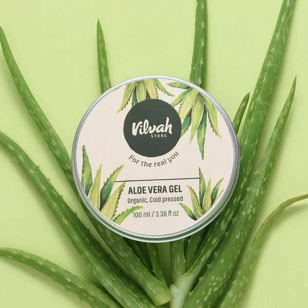
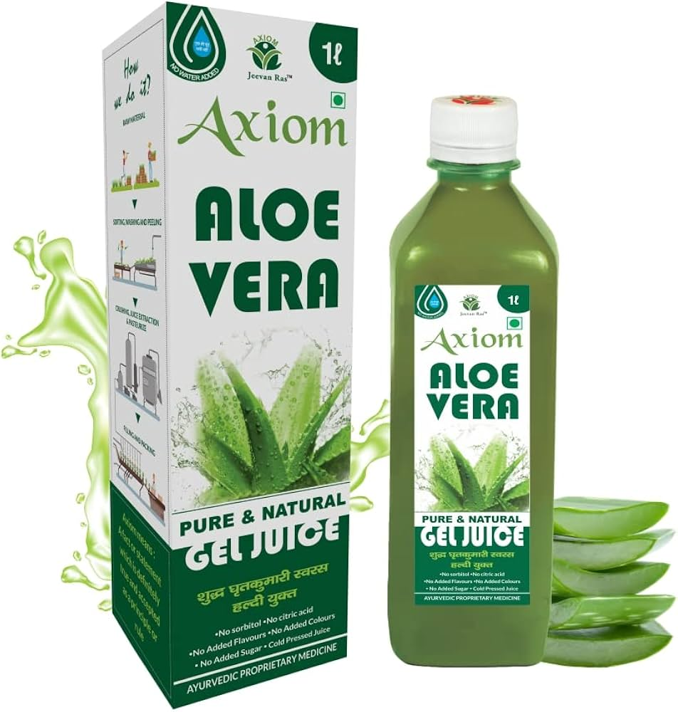

A perennial undershrub about 2-4 feet in height with
fleshy succulent leaves having horny prickles on their margins.
It is common throughout the country and also found
in many other parts of the world.
Leaves are used for various formulations particularly
Balances kapha and pitta.
Read more about various ailments, it's causes, symptoms, ayurvedic treatments, etc.


Aloe Vera Medicinal Uses & benifits
Its use is recommended in Ayurveda as a skin conditioner
and in the treatment of non-healing ulcers,
burn injuries and in treating the liver diseases like jaundice.
Experimental studies on Aloe suggest its positive cosmetic
value and wound healing properties.
Also it was observed that internal use of
Aloes evokes positive immune response in experimental animals.
The use of Aloe vera is bestowed with multifaceted benefits for skin.
By virtue of these properties,
it is used frequently in the skin care preprations across the globe.
Potential Health Benefits of Aloe Vera
1. Aloe Vera May Help Stabilize Blood Sugar
Weight loss, a healthy diet, and physical activity are the best-known
ways to lower the risk of diabetes and improve blood sugar.
But there is some evidence suggesting aloe vera can benefit blood control, too.
2. Aloe Vera in Mouthwash Can Improve Dental Health
Aloe vera could also be an unexpectedly useful addition to your oral health regimen,
thanks to its possible anti-plaque and anti-gingivitis properties.
One study divided 345 subjects into three groups of 115 and asked them to
rinse their mouth twice daily with a specified mouthwash for 30 days.
One group received an aloe-based mouthwash, one received a mouthwash
containing popular germicide chlorhexidine gluconate, and one received a placebo mouthwash
of distilled water.After 30 days, the aloe vera–based mouthwash was as effective
in reducing gum bleeding and plaque as the chlorhexidine mouthwash when compared with the placebo group.
3. Aloe Vera Supports Skin Hydration
Aloe vera has been used as an ingredient in skin-care products from moisturizers to face masks — and for good reason.
The gel is credited with moisturizing, anti-aging properties.
Applying a moisturizer is an important step in your beauty regimen because it
traps water in the skin, helping it to appear more youthful, per Mayo Clinic;
dry skin, on the other hand, causes plump skin cells to shrivel, leading to premature wrinkles.
4. Aloe Vera Gel Is Popular for Soothing Sunburn Inflammation
This is probably one of the most well-known reported benefits of aloe vera.
After a nasty sunburn, you’ve probably slathered the plant’s gel over your skin for relief.
Science does back this health claim.
“Aloe is my favorite natural choice for treating sunburns,”
says Adrienne Haughton, MD, a dermatologist with Stony Brook Medicine based in Commack, New York.
“Aloe gel is cooling and has anti-inflammatory properties, so it’ll immediately provide some relief from discomfort associated with a sunburn.”
A systematic review of 23 studies found a link between aloe vera and the healing of various forms of
burns (but not specifically mentioning sunburn). Researchers said this was due
to the plant’s ability to fight inflammation and the fact that aloe vera contains glucomannan,
a compound with regenerative properties.
The researchers concluded that the plant could reduce wound recovery times,
infections, and skin redness. They also noted that aloe vera gel appeared to be
most effective on first- and second-degree burns. According to the Skin Cancer Foundation,
first-degree burns affect only the outermost layer of the skin, and second-degree burns
penetrate into deeper layers of skin, causing swelling and blistering.
5. Aloe Vera May Fight Acne Naturally
“Thanks to its natural anti-inflammatory properties, aloe vera also serves as an excellent acne treatment,”
explains Jamie Bacharach, a licensed naturopath and the head of practice at Acupuncture Jerusalem in Israel.
“Whether it’s applied to pimples or to general areas of redness and irritation, aloe vera has been found to soothe
and diminish the appearance and prominence of acne and even acne scars.”
She cautions that aloe vera should not be applied directly to open acne blemishes.
One study tested an aloe vera face mask with ultrasound (to aid in absorption) as a way of treating facial acne.
Treating acne with aloe vera and ultrasound was effective, reducing the number of papules and skin roughness.
Researchers concluded that aloe vera was an effective treatment for mild to severe acne, and especially moderate acne.
As with many of these reported benefits, more research is needed.
Aloe vera is still very much considered as a complementary approach alongside
mainstream and prescribed acne care medications and treatments.
6. Aloe Vera Gel Is a Natural Antidote for Skin Irritation
Aloe vera may also potentially improve symptoms certain skin conditions,
as well as being beneficial as an acne and sunburn treatment.
“Aloe vera gel’s anti-inflammatory effects have also been shown to be beneficial
in the treatment of psoriasis and eczema,” says Dr. Haughton.
The authors of another study pointed out that the plant’s antibacterial, antifungal,
and moisturizing properties may prevent flare-ups in people managing atopic dermatitis.
Atopic dermatitis is the most common form of eczema.
7. Aloe Latex May Ease Constipation but Could Cause Side Effects
Constipation is defined as fewer than three bowel movements a week, per Mayo Clinic.
But while laxatives, a fiber-rich diet, and increased water intake can help improve bowel irregularity,
“some evidence also suggests using aloe vera orally [could] improve symptoms in patients with IBS and constipation,”
says Jesse P. Houghton, MD, the senior medical director of gastroenterology at SOMC Gastroenterology Associates in Portsmouth, Ohio.
“This is one of the most well-studied benefits of the aloe plant,” he continues.
“It acts as a natural laxative via two mechanisms — it provides hydration with
its high water content, and it contains anthraquinones, which act as a stimulant laxative.”
8. Aloe Vera Gel Powder May Lower Blood Pressure
Aloe vera is no substitute for exercise, healthy eating, and medication — all of which can help to reduce high blood pressure.
It might offer some benefit as a complementary therapy, but research is still very limited.
In one study, 90 people with diabetes who were not dependent on insulin received either 100 milligrams (mg)
of aloe vera gel powder in capsules daily, 200 mg of aloe vera gel powder in capsules daily, or no treatment for three months.
The aloe vera groups also received nutritional counseling.
TABLETS


